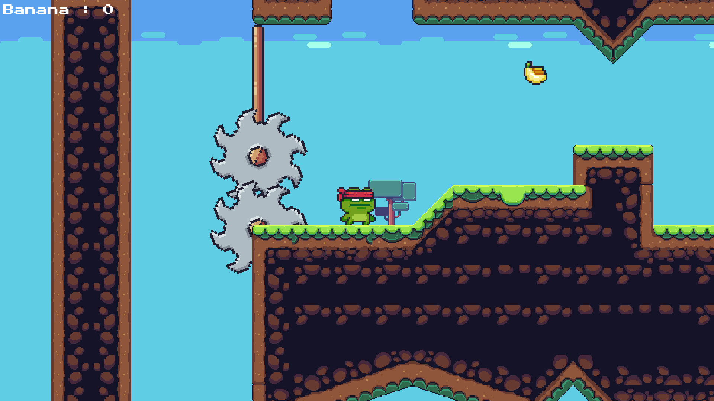

Project
Super Pudidi Run
Portfolio
Unity Game: Super Pudidi Run
Super Pudidi Run is a windows game that is created with Unity as a way for learning game mechanic and design. It's created with C# and use some unity free asset from community for UI/UX.
Super Pudidi Run have 2D platformer genre with main caracter as frog ninja. It's main objectives was to collect banana while avoid the obstacles and trap until reaching finish line flag. The game itself just consist of 2 stages and can be cleared within 5-10 minutes.
Recently, I try to deploy the game as web based program with github pages without change the source code. So, due to it's originality for desktop program, it's don't have mobile control support. Also, exit button that used to terminate the game is not usable. So, I suggest to download the game from "Link here!!" and run it in your desktop if you want to try as it intended.
If you interested to see the game and try it yourself, you can click the button below!